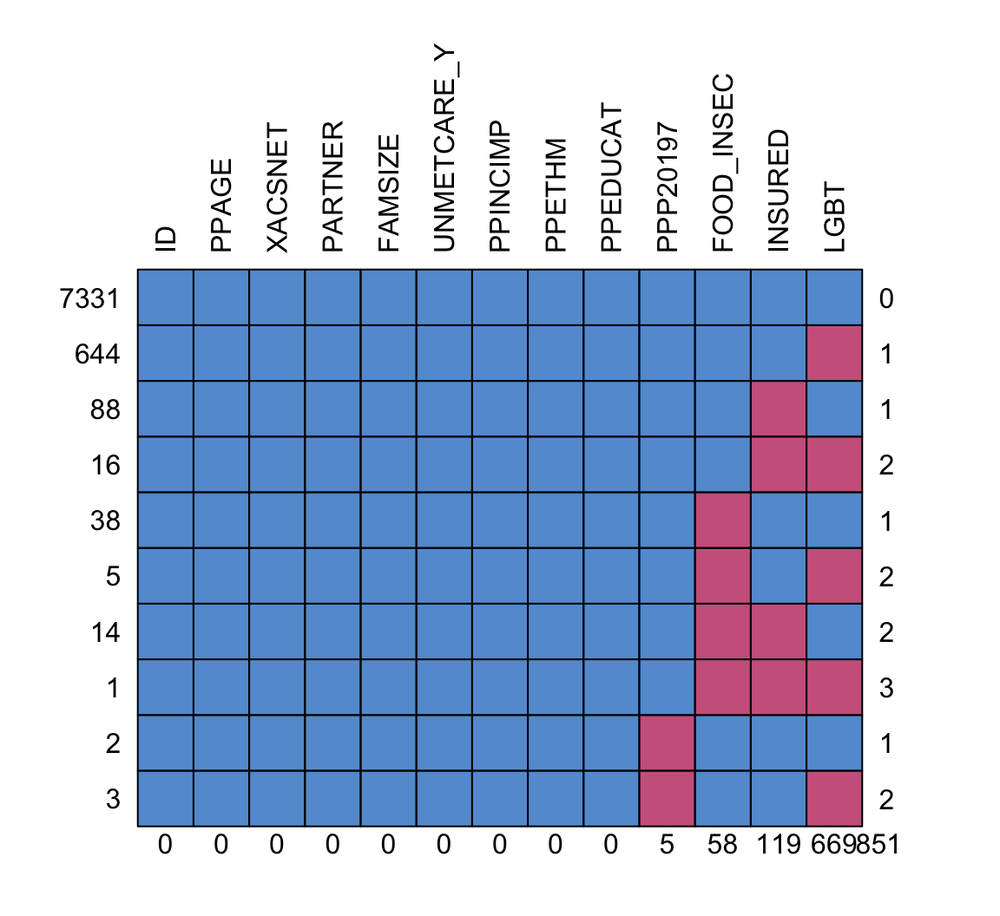

library(here)
library(tidyverse)
library(mice)
library(naniar)
library(gtsummary)Missing Data
load(here("project", "data", "wbns_data.rda"))My variables:
Outcome: food insecurity
Predictors:
- PPAGE: Age
- LGBT: Gay or lesbian, bisexual, or transgender (re-coded)
- XACSNET: Internet access
- PARTNER: Living with a partner
- FAMSIZE: Family size - field data and imputed
- INSURED: Insured at time of survey
- UNMETCARE_Y: Needed medical care but did not get it because could not afford it in past 12 months
- PPP20197: Citizen
- PPINCIMP: Household income
- PPETHM: Race/ethnicity
You should only need to replace my dataset name with yours and my use of variable names with your project’s variables.
There are two blank sections that I invite you to try to complete. These are both important parts of quality assurance. It’s good to check that the distribution of fully observed variables are not different in the missing vs. observed groups of our variables with missing data. Also, it is important to see how our imputed data look if we place it back with the observed data. Do they stand out? I hope not! (I was going to provide code for this, but it’s not new stuff. You can visualize these! … And I really ran out of time this week :( )
Citizenship had missing data that was not coded as NA
I’m using the replace_with_na function to change the missing category to NA.
summary(wbns) ID FOOD_INSEC PPAGE LGBT XACSNET
Length:8142 No :6015 Min. :18.00 No :6852 No : 378
Class :character Yes :2069 1st Qu.:36.00 Yes : 621 Yes:7764
Mode :character NA's: 58 Median :47.00 NA's: 669
Mean :45.92
3rd Qu.:57.00
Max. :64.00
PARTNER FAMSIZE INSURED UNMETCARE_Y PPP20197
No :7326 2 :3009 No : 856 No :6725 Yes :6825
Yes: 816 1 :2753 Yes :7167 Yes:1417 Missing : 5
3 : 986 NA's: 119 No : 470
4 : 880 Not asked: 842
5 : 336
6 : 114
(Other): 64
PPINCIMP PPETHM
Less than $5,000 : 717 White, Non-Hispanic :4738
$100,000 to $124,999: 641 2+ Races, Non-Hispanic: 238
$15,000 to $19,999 : 511 Black, Non-Hispanic :1023
$20,000 to $24,999 : 499 Hispanic :1473
$60,000 to $74,999 : 443 Other, Non-Hispanic : 670
$150,000 to $174,999: 423
(Other) :4908
PPEDUCAT
Less than high school : 613
Bachelor's degree or higher:3041
High school :1940
Some college :2548
wbns_miss = wbns %>%
replace_with_na(replace = list(PPP20197 = "Missing"))
# If Missing, replace with NA, if not then keep value as is
summary(wbns_miss) ID FOOD_INSEC PPAGE LGBT XACSNET
Length:8142 No :6015 Min. :18.00 No :6852 No : 378
Class :character Yes :2069 1st Qu.:36.00 Yes : 621 Yes:7764
Mode :character NA's: 58 Median :47.00 NA's: 669
Mean :45.92
3rd Qu.:57.00
Max. :64.00
PARTNER FAMSIZE INSURED UNMETCARE_Y PPP20197
No :7326 2 :3009 No : 856 No :6725 Yes :6825
Yes: 816 1 :2753 Yes :7167 Yes:1417 Missing : 0
3 : 986 NA's: 119 No : 470
4 : 880 Not asked: 842
5 : 336 NA's : 5
6 : 114
(Other): 64
PPINCIMP PPETHM
Less than $5,000 : 717 White, Non-Hispanic :4738
$100,000 to $124,999: 641 2+ Races, Non-Hispanic: 238
$15,000 to $19,999 : 511 Black, Non-Hispanic :1023
$20,000 to $24,999 : 499 Hispanic :1473
$60,000 to $74,999 : 443 Other, Non-Hispanic : 670
$150,000 to $174,999: 423
(Other) :4908
PPEDUCAT
Less than high school : 613
Bachelor's degree or higher:3041
High school :1940
Some college :2548
Look at the missing data pattern
Now I can look at the missing data pattern.
md.pattern(wbns_miss, rotate.names = T)
ID PPAGE XACSNET PARTNER FAMSIZE UNMETCARE_Y PPINCIMP PPETHM PPEDUCAT
7331 1 1 1 1 1 1 1 1 1
644 1 1 1 1 1 1 1 1 1
88 1 1 1 1 1 1 1 1 1
16 1 1 1 1 1 1 1 1 1
38 1 1 1 1 1 1 1 1 1
5 1 1 1 1 1 1 1 1 1
14 1 1 1 1 1 1 1 1 1
1 1 1 1 1 1 1 1 1 1
2 1 1 1 1 1 1 1 1 1
3 1 1 1 1 1 1 1 1 1
0 0 0 0 0 0 0 0 0
PPP20197 FOOD_INSEC INSURED LGBT
7331 1 1 1 1 0
644 1 1 1 0 1
88 1 1 0 1 1
16 1 1 0 0 2
38 1 0 1 1 1
5 1 0 1 0 2
14 1 0 0 1 2
1 1 0 0 0 3
2 0 1 1 1 1
3 0 1 1 0 2
5 58 119 669 851Looks like citizenship, food insecurity, insurance, and identifying as LGBT have missing data.
Check the distributions of the variables from the observed vs. missing data
Use mice to impute data
Now we can use the mice() function to impute the data.
Let’s break down what I’m using in the function below:
I set
m=5as the number of imputations that I will be runningI set
print = Fso I don’t get the message as it imputesI set
defaultMethod = c("norm", "logreg", "polyreg", "polr")- This means
micewill determine which method to use based on the type of variable - For binary variables it will use “logreg.” Thus, it will use logistic regression to predict the missing values. This will include food insecurity, insured, and LGBT variables in my data.
- For continuous variables, it will use “norm.predict” which will consist of predicting the missing values from linear regression. I don’t have any missing continuous values, so this one is not used.
- For multi-level categorical varaibles, we use “polyreg” which is a type of logistic regression that is expanded to handle multiple levels of outcomes. This will include citizenship in my data.
- For ordinal variables, we use “polr” which is a proportional odds model, another type of generalized linear regression model that handles ordered categories. I don’t have any missing ordinal variables, so this one is not used.
- This means
wbns_MI_5 = mice(wbns_miss, m=5, print = F,
defaultMethod = c("norm.predict", "logreg", "polyreg", "polr"))Warning: Number of logged events: 76Complete data
It’s hard to parse through the output of mice, but we can take a look at one of the imputation’s complete (aka filled in) data. Below I will look at the first imputation (hence the 1). You can change the 1 to anything up to 5 to see the different imputations.
d1 = complete(wbns_MI_5, 1)
summary(d1) ID FOOD_INSEC PPAGE LGBT XACSNET PARTNER
Length:8142 No :6049 Min. :18.00 No :7455 No : 378 No :7326
Class :character Yes:2093 1st Qu.:36.00 Yes: 687 Yes:7764 Yes: 816
Mode :character Median :47.00
Mean :45.92
3rd Qu.:57.00
Max. :64.00
FAMSIZE INSURED UNMETCARE_Y PPP20197
2 :3009 No : 877 No :6725 Yes :6827
1 :2753 Yes:7265 Yes:1417 Missing : 0
3 : 986 No : 472
4 : 880 Not asked: 843
5 : 336
6 : 114
(Other): 64
PPINCIMP PPETHM
Less than $5,000 : 717 White, Non-Hispanic :4738
$100,000 to $124,999: 641 2+ Races, Non-Hispanic: 238
$15,000 to $19,999 : 511 Black, Non-Hispanic :1023
$20,000 to $24,999 : 499 Hispanic :1473
$60,000 to $74,999 : 443 Other, Non-Hispanic : 670
$150,000 to $174,999: 423
(Other) :4908
PPEDUCAT
Less than high school : 613
Bachelor's degree or higher:3041
High school :1940
Some college :2548
See how the imputed values look within the observed values
Fit regression with imputations
Below is how we run a regression model with the output from mice (wbns_MI_5). We use the with function that can be read as: With wbns_MI_5, run the following glm function. It will automatically know to know 5 different regressions, one with each imputed dataset.
reg = with(wbns_MI_5, glm(FOOD_INSEC ~ PPAGE + LGBT + XACSNET + PARTNER +
FAMSIZE + INSURED + UNMETCARE_Y + PPP20197 +
PPETHM, family = binomial))Once I have fit the regression model with each imputed dataset, I can pool the results. The mice function will use Rubin’s Rules to pool the estimates and variances. Note the use of the pool function!
pooled_reg_MI = pool(reg)
mi_reg = summary(pooled_reg_MI, conf.int = TRUE)
mi_reg term estimate std.error statistic df
1 (Intercept) -0.94092399 0.191125980 -4.9230565 371.1422
2 PPAGE 0.00433198 0.002352706 1.8412753 4257.8618
3 LGBTYes 0.29504789 0.094069406 3.1364915 7823.2657
4 XACSNETYes -0.53596317 0.120983545 -4.4300502 2633.9023
5 PARTNERYes 0.74171351 0.091820246 8.0778864 7755.2850
6 FAMSIZE2 -0.66386257 0.071469877 -9.2887045 7184.0725
7 FAMSIZE3 -0.30985352 0.093877706 -3.3006082 8042.7947
8 FAMSIZE4 -0.37783269 0.100154973 -3.7724806 8113.8532
9 FAMSIZE5 -0.09145848 0.140895783 -0.6491215 7209.2753
10 FAMSIZE6 -0.13370972 0.233548879 -0.5725128 8115.1279
11 FAMSIZE7 -0.17014962 0.383547409 -0.4436208 8119.0239
12 FAMSIZE8 or more 0.71359901 0.454899462 1.5686961 8117.4492
13 INSUREDYes -0.26630423 0.090125051 -2.9548303 267.5774
14 UNMETCARE_YYes 1.63076485 0.065345023 24.9562213 6570.3110
15 PPP20197No 0.16420384 0.126611682 1.2969091 2663.4593
16 PPP20197Not asked 0.64393756 0.084100957 7.6567210 5487.8370
17 PPETHM2+ Races, Non-Hispanic 0.62960454 0.150679742 4.1784286 8107.6586
18 PPETHMBlack, Non-Hispanic 0.48429429 0.082295957 5.8847884 6012.6999
19 PPETHMHispanic 0.57000522 0.076440622 7.4568365 6839.4712
20 PPETHMOther, Non-Hispanic -0.53485283 0.129266329 -4.1376036 6390.7763
p.value 2.5 % 97.5 %
1 1.284335e-06 -1.3167495965 -0.56509839
2 6.565074e-02 -0.0002805507 0.00894451
3 1.716164e-03 0.1106467165 0.47944907
4 9.805811e-06 -0.7731955792 -0.29873077
5 7.585129e-16 0.5617210473 0.92170598
6 2.031468e-20 -0.8039645609 -0.52376058
7 9.689561e-04 -0.4938781410 -0.12582891
8 1.627826e-04 -0.5741621197 -0.18150327
9 5.162805e-01 -0.3676555070 0.18473855
10 5.669905e-01 -0.5915253974 0.32410595
11 6.573286e-01 -0.9220008165 0.58170157
12 1.167577e-01 -0.1781205135 1.60531853
13 3.406969e-03 -0.4437486779 -0.08885979
14 2.056988e-131 1.5026673651 1.75886234
15 1.947748e-01 -0.0840633202 0.41247099
16 2.240009e-14 0.4790663555 0.80880877
17 2.966107e-05 0.3342335827 0.92497551
18 4.200523e-09 0.3229647002 0.64562387
19 9.956707e-14 0.4201578390 0.71985261
20 3.554574e-05 -0.7882581666 -0.28144748We can do an informal sensitivity analysis
Here I am simply running a logistic regression model using our complete data. We can compare the estimates from this model to the pooled estimates from the multiply imputed datasets.
wbns_cc = wbns_miss %>% drop_na()
reg_cc = glm(FOOD_INSEC ~ PPAGE + LGBT + XACSNET + PARTNER +
FAMSIZE + INSURED + UNMETCARE_Y + PPP20197 +
PPETHM, family = binomial, data = wbns_cc)
cc_reg = summary(reg_cc)I will put the estimates side-by-side now.
estimates = cbind(Mult_imp = mi_reg$estimate,
Complete_case = cc_reg$coefficients[,1])
estimates Mult_imp Complete_case
(Intercept) -0.94092399 -0.923507128
PPAGE 0.00433198 0.003963706
LGBTYes 0.29504789 0.253429229
XACSNETYes -0.53596317 -0.537266195
PARTNERYes 0.74171351 0.756557601
FAMSIZE2 -0.66386257 -0.733347778
FAMSIZE3 -0.30985352 -0.431279163
FAMSIZE4 -0.37783269 -0.469643349
FAMSIZE5 -0.09145848 -0.136786735
FAMSIZE6 -0.13370972 -0.333273866
FAMSIZE7 -0.17014962 -0.158287657
FAMSIZE8 or more 0.71359901 0.698218128
INSUREDYes -0.26630423 -0.242185879
UNMETCARE_YYes 1.63076485 1.739880532
PPP20197No 0.16420384 0.239127321
PPP20197Not asked 0.64393756 0.596022881
PPETHM2+ Races, Non-Hispanic 0.62960454 0.641231577
PPETHMBlack, Non-Hispanic 0.48429429 0.457402801
PPETHMHispanic 0.57000522 0.535396844
PPETHMOther, Non-Hispanic -0.53485283 -0.541533105The most important thing I am noting is that:
- The complete case estimates have the same signs as the pooled.
- For the most part, the magnitude of the estimates have not changed by much. Family size seems to be the most impacted.
Now we can proceed with the other parts of Lab 3
Below is some sample code for how I would make a tidy dataset or an odds ratio table from the pooled results! From reg and pooled_reg_MI you should be able to do everything else in Lab 3!
tidy(pooled_reg_MI, exponentiate=T) term estimate std.error statistic p.value
1 (Intercept) 0.3902671 0.191125980 -4.9230565 1.284335e-06
2 PPAGE 1.0043414 0.002352706 1.8412753 6.565074e-02
3 LGBTYes 1.3431907 0.094069406 3.1364915 1.716164e-03
4 XACSNETYes 0.5851055 0.120983545 -4.4300502 9.805811e-06
5 PARTNERYes 2.0995300 0.091820246 8.0778864 7.585129e-16
6 FAMSIZE2 0.5148588 0.071469877 -9.2887045 2.031468e-20
7 FAMSIZE3 0.7335544 0.093877706 -3.3006082 9.689561e-04
8 FAMSIZE4 0.6853452 0.100154973 -3.7724806 1.627826e-04
9 FAMSIZE5 0.9125992 0.140895783 -0.6491215 5.162805e-01
10 FAMSIZE6 0.8748440 0.233548879 -0.5725128 5.669905e-01
11 FAMSIZE7 0.8435386 0.383547409 -0.4436208 6.573286e-01
12 FAMSIZE8 or more 2.0413248 0.454899462 1.5686961 1.167577e-01
13 INSUREDYes 0.7662060 0.090125051 -2.9548303 3.406969e-03
14 UNMETCARE_YYes 5.1077799 0.065345023 24.9562213 2.056988e-131
15 PPP20197No 1.1784545 0.126611682 1.2969091 1.947748e-01
16 PPP20197Not asked 1.9039631 0.084100957 7.6567210 2.240009e-14
17 PPETHM2+ Races, Non-Hispanic 1.8768682 0.150679742 4.1784286 2.966107e-05
18 PPETHMBlack, Non-Hispanic 1.6230292 0.082295957 5.8847884 4.200523e-09
19 PPETHMHispanic 1.7682763 0.076440622 7.4568365 9.956707e-14
20 PPETHMOther, Non-Hispanic 0.5857555 0.129266329 -4.1376036 3.554574e-05
b df dfcom fmi lambda m riv
1 3.078828e-03 371.1422 8122 0.1059458931 1.011410e-01 5 1.125215e-01
2 9.635094e-08 4257.8618 8122 0.0213478239 2.088824e-02 5 2.133387e-02
3 3.010394e-05 7823.2657 8122 0.0043368335 4.082327e-03 5 4.099061e-03
4 3.876201e-04 2633.9023 8122 0.0325129738 3.177861e-02 5 3.282164e-02
5 3.212251e-05 7755.2850 8122 0.0048286900 4.572080e-03 5 4.593080e-03
6 3.305960e-05 7184.0725 8122 0.0080427492 7.766633e-03 5 7.827426e-03
7 1.426055e-05 8042.7947 8122 0.0021898414 1.941747e-03 5 1.945525e-03
8 3.446834e-06 8113.8532 8122 0.0006586404 4.123410e-04 5 4.125111e-04
9 1.264598e-04 7209.2753 8122 0.0079194852 7.644300e-03 5 7.703185e-03
10 1.594018e-05 8115.1279 8122 0.0005969622 3.506864e-04 5 3.508094e-04
11 1.093794e-05 8119.0239 8122 0.0003354454 8.922336e-05 5 8.923132e-05
12 3.757543e-05 8117.4492 8122 0.0004641367 2.178986e-04 5 2.179461e-04
13 8.119475e-04 267.5774 8122 0.1264598795 1.199549e-01 5 1.363055e-01
14 3.747975e-05 6570.3110 8122 0.0108340745 1.053302e-02 5 1.064514e-02
15 4.209953e-04 2663.4593 8122 0.0322409563 3.151454e-02 5 3.254002e-02
16 8.913799e-05 5487.8370 8122 0.0154818829 1.512315e-02 5 1.535537e-02
17 1.237177e-05 8107.6586 8122 0.0009003157 6.538879e-04 5 6.543157e-04
18 7.276280e-05 6012.6999 8122 0.0132205733 1.289240e-02 5 1.306078e-02
19 4.556804e-05 6839.4712 8122 0.0096477741 9.358217e-03 5 9.446621e-03
20 1.573331e-04 6390.7763 8122 0.0116080206 1.129875e-02 5 1.142787e-02
ubar
1 3.283455e-02
2 5.419605e-06
3 8.812928e-03
4 1.417187e-02
5 8.392411e-03
6 5.068272e-03
7 8.795911e-03
8 1.002688e-02
9 1.969987e-02
10 5.452595e-02
11 1.470955e-01
12 2.068884e-01
13 7.148188e-03
14 4.224996e-03
15 1.552532e-02
16 6.966005e-03
17 2.268954e-02
18 6.685309e-03
19 5.788487e-03
20 1.652098e-02tbl_regression(reg, exponentiate = T) # Note I am not using the pooled resultspool_and_tidy_mice(): Tidying mice model with
`mice::pool(x) %>% mice::tidy(conf.int = TRUE, conf.level = 0.95, exponentiate = TRUE)`| Characteristic | OR1 | 95% CI1 | p-value |
|---|---|---|---|
| PPAGE | 1.00 | 1.00, 1.01 | 0.066 |
| LGBT | |||
| No | — | — | |
| Yes | 1.34 | 1.12, 1.62 | 0.002 |
| XACSNET | |||
| No | — | — | |
| Yes | 0.59 | 0.46, 0.74 | <0.001 |
| PARTNER | |||
| No | — | — | |
| Yes | 2.10 | 1.75, 2.51 | <0.001 |
| FAMSIZE | |||
| 1 | — | — | |
| 2 | 0.51 | 0.45, 0.59 | <0.001 |
| 3 | 0.73 | 0.61, 0.88 | <0.001 |
| 4 | 0.69 | 0.56, 0.83 | <0.001 |
| 5 | 0.91 | 0.69, 1.20 | 0.5 |
| 6 | 0.87 | 0.55, 1.38 | 0.6 |
| 7 | 0.84 | 0.40, 1.79 | 0.7 |
| 8 or more | 2.04 | 0.84, 4.98 | 0.12 |
| INSURED | |||
| No | — | — | |
| Yes | 0.77 | 0.64, 0.91 | 0.003 |
| UNMETCARE_Y | |||
| No | — | — | |
| Yes | 5.11 | 4.49, 5.81 | <0.001 |
| PPP20197 | |||
| Yes | — | — | |
| No | 1.18 | 0.92, 1.51 | 0.2 |
| Not asked | 1.90 | 1.61, 2.25 | <0.001 |
| PPETHM | |||
| White, Non-Hispanic | — | — | |
| 2+ Races, Non-Hispanic | 1.88 | 1.40, 2.52 | <0.001 |
| Black, Non-Hispanic | 1.62 | 1.38, 1.91 | <0.001 |
| Hispanic | 1.77 | 1.52, 2.05 | <0.001 |
| Other, Non-Hispanic | 0.59 | 0.45, 0.75 | <0.001 |
| 1 OR = Odds Ratio, CI = Confidence Interval | |||
# tble_regression will automatically pool them!